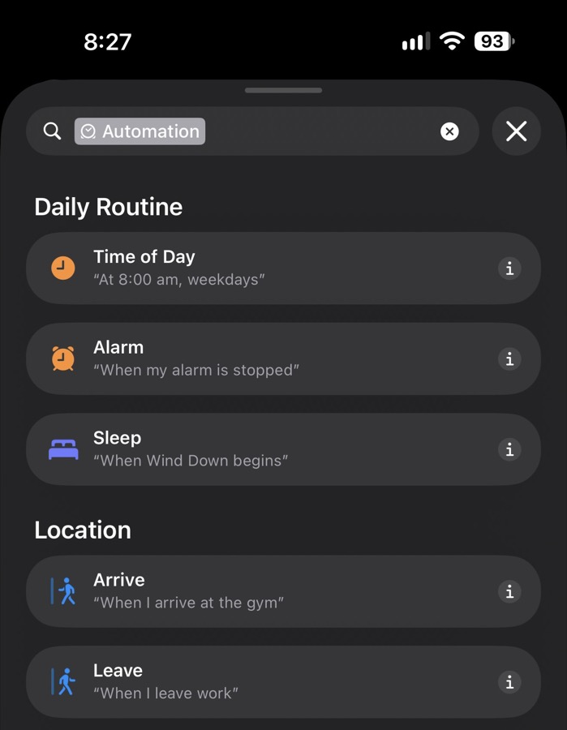
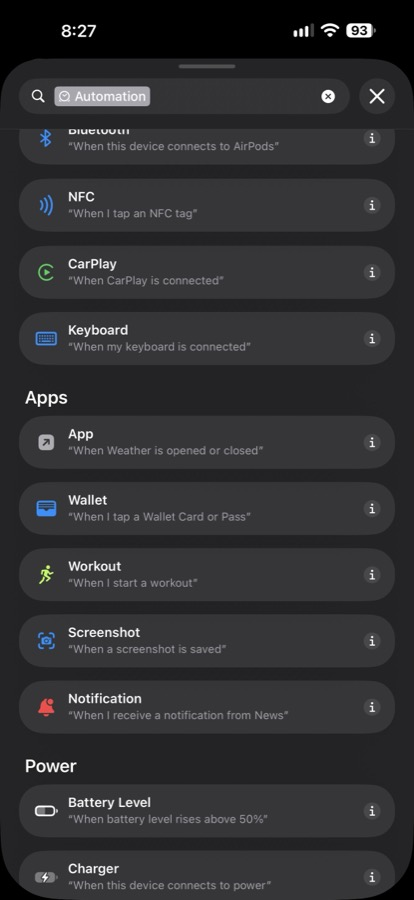
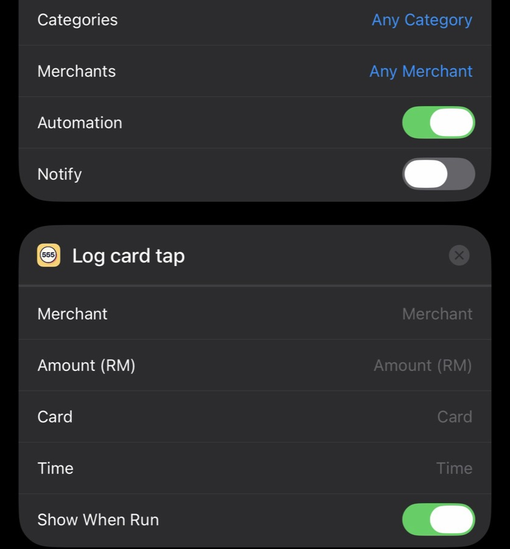
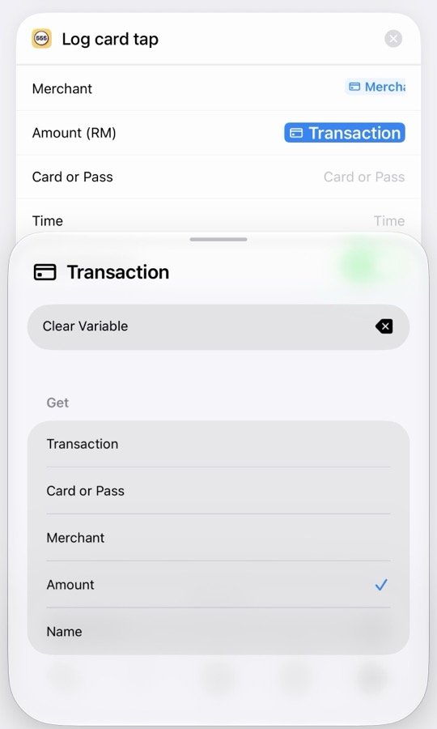

Buku 555 — Wallet Setup Guide
Updated
Set this up once, and each Apple Pay payment with a card you tick lands in the Review tab as a draft. Setup takes about a minute in the Shortcuts app. The steps below match the guide inside the app.
Before you start
Pay with Apple Pay on the iPhone, not the plastic card. TNG eWallet and DuitNow QR are not caught. Add those by hand.
Set up the automation
- Open the Shortcuts app and go to the Automation tab.
- Open the action search and tap the Automation chip. The round + makes a plain shortcut, not an automation.

- Under Apps, choose “Wallet – When I tap a Wallet Card or Pass”.

- Tap the card name to tick one or more cards. Keep Any Category and Any Merchant, Automation on, and Notify off.

- Add the action Log card tap (Buku 555).
- Optional: tap Merchant and pick Transaction > Merchant. Tap Amount (RM) and pick Transaction > Amount. Leave Card or Pass empty. The blue token may still read “Transaction” after you pick Amount; the tick in the menu is what counts. If you skip this, each tap makes a draft you fill in.

- Turn off Show When Run.
Check it without paying
The automation only runs on a real tap, so the app has a “Test it” button. Open the guide from either place below and tap it:
Settings → Automatic capture → Wallet Shortcut guide, or
Review tab → How to set up
Review tab → How to set up
The button adds a test draft for RM 1.00 to Review, through the same path a real tap uses, so you can see how Review works.
Tips
- Tick every card you pay with. If you pay with more than one card, tick each one in step 4.
- Keep only one Buku 555 Wallet automation. Two of them give duplicate drafts for every tap.
- Never put the whole Transaction in a field. Pick Transaction > Merchant or Transaction > Amount instead. Putting the whole Transaction in a field causes the error “couldn’t convert from Transaction to Text”.
- Amounts only fill in on a real payment, not when you press play in Shortcuts.
- If your bank sends no details, each tap is a draft you finish in Review.
Still stuck?
See the Support page for more help, or read our Privacy Policy.